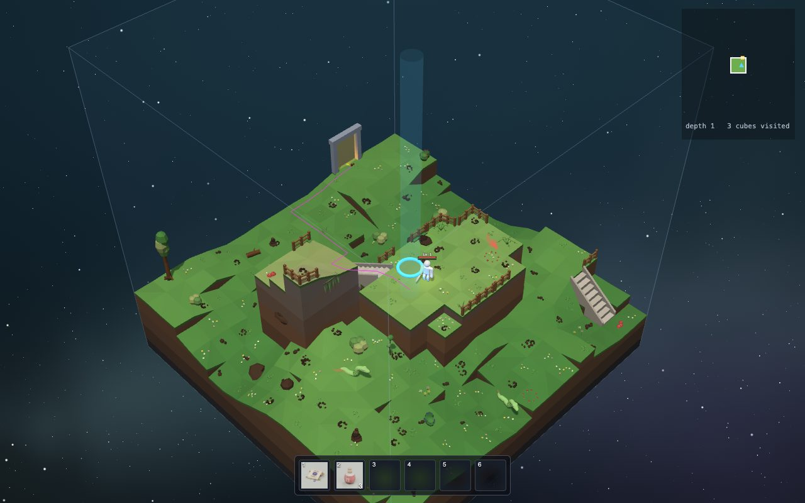

Inventing a whole world
Nobody drew the cubes of Cube Crawler. The game invents them while you play. This is called procedural generation: instead of drawing a level, you write the rules for making levels.
The game does it like a team of four workers:
- The planner draws a path of rooms for each depth: where you come in, where the well is, where the guardians wait.
- The puzzle solver decides what kind of land each cube is: meadow, highland, river, lake... Neighbours must fit together like puzzle pieces.
- The builder makes one cube: hills, rivers, upper floors, stairs, bridges, ladders, fences.
- The inspector checks that you can really walk from every entrance to the exit. If not: throw it away and build again!

The planner: a path of rooms
Every depth has a route of 7 to 14 rooms. It starts right under the well of the depth above, and ends at the next well down.
Before the well there is always a strong descent guardian (gold), and on the way one or two side guardians (pink) block gates. Beat them to open the way.
Some rooms get a side room with a treasure chest.
Move the depth slider: deeper down, the ring gets smaller, until the core at depth 20.
How the planner finds a path: try, back up, try again
The planner has a ring of possible cubes around the middle of the world. It wants a path of, say, 11 rooms that ends on the inner edge of the ring.
- Start at the room under the last well.
- Step to a neighbour that is not used yet. (Which one first? The dice decide.)
- Stuck, but not long enough yet? Step back and try a different neighbour.
- Long enough and at the right spot? Done!
This is called backtracking. It is how you solve a maze with a pencil: go until you hit a dead end, then go back to the last fork.
Then the extras
- Guardians: the room with the well always gets the descent guardian. One or two rooms along the way get side guardians.
- Side rooms: some rooms get one extra room next to them, never more than 14 rooms per depth in total.
- No shortcuts: side rooms never connect to other rooms, so you cannot sneak around a guardian.
- Treasure: each depth plans four treasure sites, mostly in side rooms.
The puzzle solver: pieces with matching edges
Each cube is like a puzzle piece with four edges. Each edge is one of three kinds:
- L lowland: the ground is low here
- H highland: the ground is high
- W water: a river crosses this edge
The rule: touching edges must match. A river that leaves one cube must enter the next one.
The edges decide the kind of land: all L is a meadow, all H a highland, two W a river...
Press Play and watch the world fill in.
Wave function collapse
This puzzle method has a fancy name: wave function collapse (WFC). The name comes from physics, but the idea is simple:
- At first, every cube could still be any piece. (87 pieces, so the demo shows 87 options.)
- Pick the cube with the fewest options left. Roll weighted dice to choose one of its pieces. Now it is "collapsed".
- Its neighbours now have fewer pieces that fit. Repeat!
Picking the cube with the fewest options first is like Sudoku: you fill in the square where only one or two numbers are possible first.
Two clever tricks
Never stuck: many WFC puzzles can get stuck, with a hole where no piece fits. Here, there is a piece for every combination of edges (3×3×3×3 = 81 combinations). So it always works.
Big regions: meadows and highlands have big weights (6 and 5), the mixed pieces tiny ones (slope 0.35, gorge 0.03). So same-kind cubes clump together into big areas, and the mixed pieces appear where two areas meet. The theme of each depth changes the weights: the snowy peaks love highlands.
In the game, a cube and its six neighbours collapse the moment you get close. So the world depends on the seed and on the order you explore in!
Hills from noise
To make hills, the game uses noise: random numbers that change smoothly. Pick random heights at a few points, and blend gently in between. Add a second layer that is twice as wiggly and half as strong, and a third. Big hills with small bumps on top!
The noise is the same everywhere in the world, so the ground at the edge of one cube continues smoothly into the next one.
Walls that two cubes share
Two cubes next to each other share a wall, called a face. Cubes are built one at a time, maybe hours apart. How do their edges line up?
The trick: the face is decided first, and only once. Whichever of the two cubes is prepared first decides it, and saves it. Then both cubes build their edge to match it:
- the ground height along the edge, 16 numbers from the noise
- where a river crosses it, and how wide it is
- where the portal (the gate) stands, and on which floor
Each face even has its own dice (its own seed), so it comes out the same no matter which cube decided it.
Did it work?
The game's makers checked over 400 pairs of neighbouring cubes: on every single one, the ground height and the water match on every edge cell, corners included.
Inside the cube, the builder blends from the four edges towards the middle, and adds its own hills there. The middle can be wild, the edges always match.
Big shapes: archetypes
On top of the hills, every cube gets one big shape, its archetype. The shape fades out near the edges, so the edges still match.
| ARCHETYPE | WHAT IT LOOKS LIKE |
|---|---|
| plain | nothing extra |
| chasm | a winding crack across the cube with raised rims |
| spire | a tall needle of rock on a raised base |
| sinkhole | a round pit with a raised rim |
| archipelago | islands |
| mesa | one big flat-topped block |
| crater | a ring wall around a lake (of water, lava or acid) |
Which one? Weighted dice, of course: the theme of the depth sets the weights, and the kind of land leans them. A lake cube is three times more likely to become islands. The marble bag code
The builder: try the real cube factory
This is the real generator of the game, running right here in your browser.
Pick a depth and a room on its route, and press Build it! It plans the route, solves the puzzle, decides the faces and builds the cube, usually in a few thousandths of a second.
Gold rings: gates to other cubes, and the well down. Cyan: the ring you came up through. Pink dashes: the route the builder planned. Grey: stone stairs. Brown: wooden bridges.
Rooms called "arena" are guardian rooms: flat, so there is space to fight. Try depth 9 or 17 for caves.
The assembly line
The builder works in fixed steps, one after the other, like a factory line. Each step adds something:
- How many floors stacked up (1 to 4)
- Ground heights, blended from the four faces
- The big shape (archetype)
- Portals on the faces
- Rivers, from crossing to crossing
- Waterfalls into the cube below
- Space for treasure sites
- Upper floors (slabs)
- Ramps and supports
- Pools and streams
- Every possible move: walk, drop, jump, stairs, bridge, ladder
- Routes between the portals
- Escape routes from places you could fall into
- Place the stairs, bridges and ladders
- Smooth the ground
- Bridge styles and pillars
- Fences on dangerous edges
- The inspection
Notice step 11 and 12: the builder first lists every move a hero could make, then searches for the cheapest way between the portals. That search is the same kind used for finding the way.
The inspector: throw it away and try again
After building, an inspector plays the cube in its head. Starting from the exit, it works out everything the hero can really do:
- walk on flat ground and slopes, jump up one level, drop down cliffs that have no fence
- swim, and climb out of water up to two levels
- use the stairs, bridges and ladders
If any portal cannot reach the exit, or a route squeezes under a ceiling that is too low, the cube fails. The builder throws it away and tries again with new dice. Up to 200 tries!
Usually the first try works: about 1.07 tries per cube on average.
A true story
An earlier version planned its routes from the first portal outwards. But you can drop down a cliff and not climb back up. So some routes only worked in the wrong direction!
When the makers tested it: none of 12 test worlds could be finished, and in four of them you were trapped in the town.
After the fix, routes are planned from every portal to the exit, and the inspector checks it. Now 64 of 64 test worlds can be walked from the town all the way to depth 20.
Lesson: write a check for the thing that must never break.
The real code: collapsing cubes
domain(k) { // the pieces that fit next to the collapsed neighbours
const nb = [0, 1, 2, 3].map(d => this.tiles.get(step(k, d)));
return TILES.filter(t => nb.every((n, d) => !n || n.sock[OPP6[d]] === t.sock[d]));
}
collapse(keys) {
const todo = new Set(keys.filter(k => !this.tiles.has(k)));
while (todo.size) {
let best = null, bestE = Infinity, bestDom = null;
for (const k of todo) {
const dom = this.domain(k), e = this.entropy(dom, weightAt(k)) + (hashKey(k) % 1000) * 1e-6;
if (e < bestE) { best = k; bestE = e; bestDom = dom; }
}
const R = this.rng(best), w = weightAt(best), sum = bestDom.reduce((s, t) => s + w(t), 0);
let r = R() * sum, tile = bestDom[bestDom.length - 1];
for (const t of bestDom) if ((r -= w(t)) < 0) { tile = t; break; }
this.tiles.set(best, { ...tile, K: layersOf(tile.kind, R(), near) });
todo.delete(best);
}
}domain: keep only the pieces where every collapsed neighbour's touching edge (OPP6[d] is the opposite side) matches ours.
entropy is a measure of "how many choices, and how evenly weighted". Low entropy = few real choices.
The hashKey(k) % 1000 * 1e-6 part is a tiny tie-breaker, so two equal cubes are always picked in the same order.
Then the marble bag picks a piece, and layersOf decides how many floors it gets (leaning towards what the neighbours have, so tall regions form).
The real code: build, inspect, retry
function tryGenerate(seed, spec) {
const ctx = createContext(seed);
chooseLayers(ctx); groundHeights(ctx); shapeCube(ctx);
placePortals(ctx); carveRiver(ctx); /* ... */
makeMoves(ctx);
if (!findRoute(ctx)) return null;
addEscapes(ctx); finishRoute(ctx);
if (!placeStructures(ctx)) return null;
smooth(ctx); shapeStructures(ctx); addFences(ctx);
// every portal must lead to the exit with the final slopes and fences
const safe = reachTo(ctx, ctx.hub, true);
if (safe && ctx.portalFloors.some(f => !safe.has(f.id))) return null;
return { /* the finished map */ };
}
export function generate(spec) {
for (let a = 0; a < 200; a++) {
const m = tryGenerate(hash32(spec.seed + a * 7919), spec);
if (m) return m;
}
throw new Error('generator failed for cube ' + spec.key);
}Each stage is a function that gets the same ctx (the context: the cube under construction) and adds its part.
return null means "this attempt failed". The loop in generate then tries the next seed: spec.seed + a * 7919, mixed by hash32. (7919 is just a big prime number, so the seeds of the attempts are far apart.)
The spec is what the world decided for this cube: its faces, portals and kind. Retries change the dice, but never the spec, so the edges always keep matching.
The real function also handles treasure sites, the town and guardian arenas.
The real code: the backtracking route
function route(candidates, prefix, length, goal, R) {
const allowed = new Set(candidates.map(id)), used = new Set(prefix.map(id));
const priority = new Map(candidates.map(c => [id(c), R()])), out = [...prefix];
function visit() {
const c = out.at(-1);
if (out.length === length) return goal(c);
const next = nb(c).filter(n => allowed.has(id(n)) && !used.has(id(n)));
next.sort((a, b) => priority.get(id(a)) - priority.get(id(b)));
for (const n of next) {
out.push(n); used.add(id(n));
if (visit()) return true;
used.delete(id(n)); out.pop(); // back up
}
return false;
}
return visit() ? out : null;
}visit calls itself for the next step. That is called recursion.
If the path is long enough, it asks goal(c): "are we in the right place to end?"
Otherwise it tries each free neighbour. out.push walks forward. If the deeper visit() fails, out.pop() walks back, and the loop tries the next neighbour.
Each cell gets a random priority once, so the order of trying is shuffled by the seed.
Prompt quests: Building the World
Each depth has a route of 7 to 14 rooms. Show me where that is decided, and explain what would happen if I made it 10 to 18. Don't change it yet.Asking "what would happen" first is smart: bigger changes can break tests.
Make craters much more common in the badlands theme, then start the game with ?dev=1 and tell me how to jump to depth 4 to see them.Hint: arche weights in src/themes/index.js. Dev mode lets you skip ahead.
Add a new cube archetype called "twin peaks": two tall rounded hills. Follow how the existing archetypes in src/cubegen/archetypes.js work, add it to some theme weights, and run the tests to make sure every cube can still be finished."Follow how the existing ones work" and "run the tests" make a big change much safer.
Write a small script in tools/ that generates the first 5 depths for seed 123 and prints how many cubes of each archetype it made.Tools that measure things help you see if a change did what you wanted.